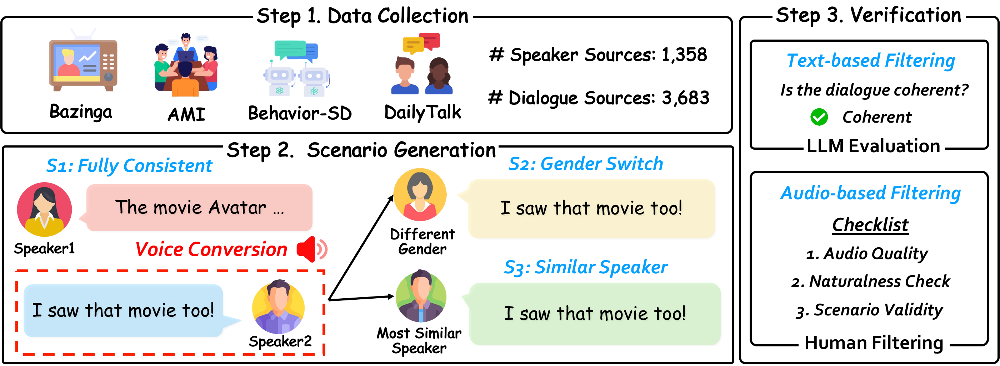
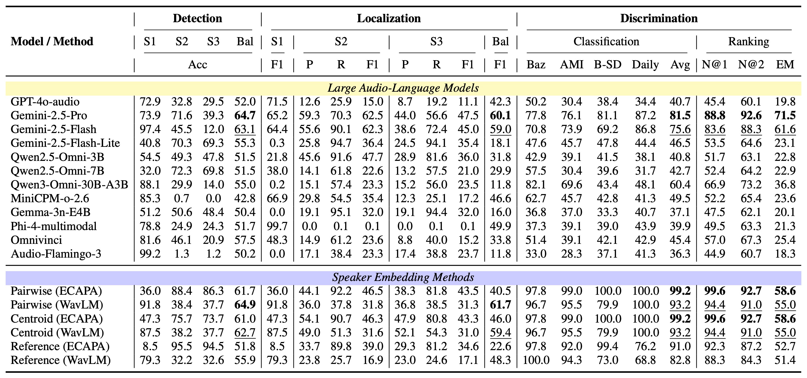
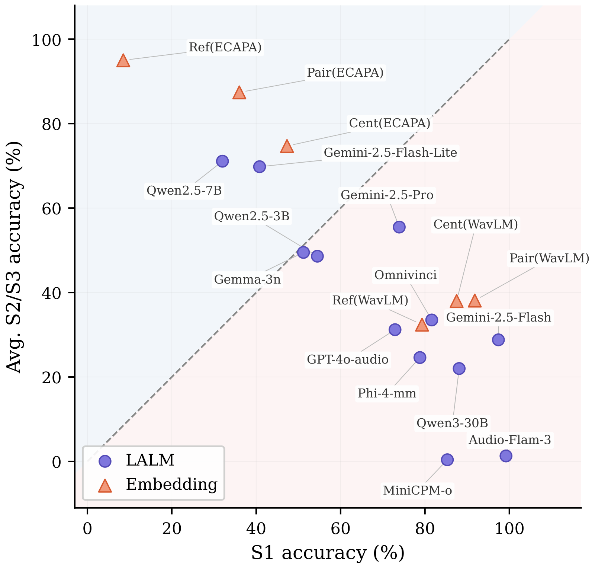
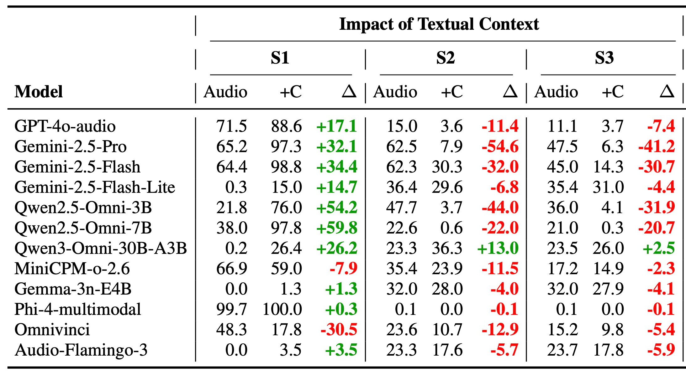
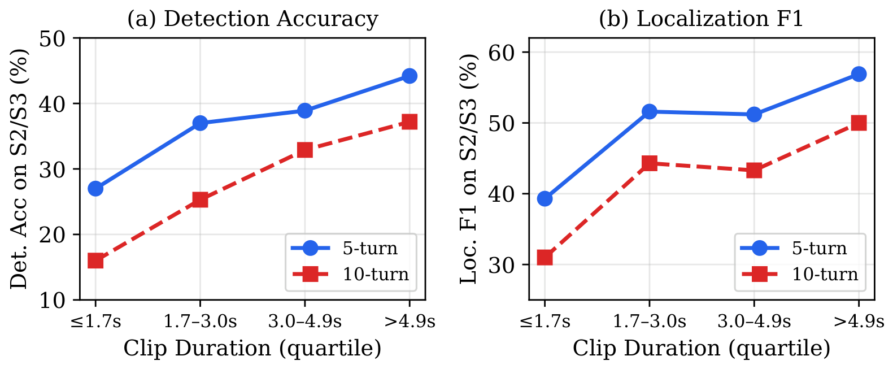

SpeakerSleuth: Can Large Audio-Language Models Judge Speaker Consistency across Multi-turn Dialogues?
Abstract
Large Audio-Language Models (LALMs) as judges have emerged as a prominent approach for evaluating speech generation quality, yet their ability to assess speaker consistency across multi-turn dialogues remains unexplored. We present SpeakerSleuth, a benchmark evaluating whether LALMs can reliably judge speaker consistency across multi-turn dialogues through three tasks reflecting real-world requirements. We construct 1,818 human-verified evaluation instances across four diverse datasets spanning synthetic and real speech, with controlled acoustic difficulty. Evaluating twelve widely-used LALMs, we find that models struggle to reliably detect acoustic inconsistencies. For instance, given audio samples of the same speaker's turns, some models overpredict inconsistency, whereas others are overly lenient. Models further struggle to identify the exact turns that are problematic. When other interlocutors' turns are provided as textual context, performance degrades dramatically as models prioritize textual coherence over acoustic cues, failing to detect even obvious gender switches for a speaker. On the other hand, models perform substantially better in comparing and ranking acoustic variants, demonstrating inherent acoustic discrimination capabilities. These findings expose a significant bias in LALMs: they tend to prioritize text over acoustics, revealing fundamental modality imbalances that need to be addressed to build reliable audio-language judges.
The Benchmark
SpeakerSleuth is built from 1,358 speaker sources and 3,683 dialogue sources, yielding 1,818 human-verified instances across four datasets spanning synthetic and real speech with controlled acoustic difficulty, and evaluates twelve widely-used LALMs. It is organized around three tasks that mirror what real speech-generation systems must get right.
1. Detection
Decide whether a dialogue contains any speaker inconsistency.
2. Localization
Pinpoint which specific turns are inconsistent with the target speaker.
3. Discrimination
Compare and rank multiple acoustic variants by speaker consistency.

Benchmark construction: (1) collect speakers and dialogues, (2) generate consistent and inconsistent scenarios via voice conversion, and (3) verify with text- and audio-based filtering.
Results
We evaluate twelve widely-used LALMs alongside speaker-embedding baselines across all three tasks. Models do markedly better at Discrimination, comparing and ranking acoustic variants, which shows they possess real acoustic ability. Yet they struggle at Detection and Localization: they tend to accept speakers as consistent and fail to flag or pinpoint inconsistencies, and even the best models remain far from reliable across all three tasks.

Main results for LALMs and speaker-embedding methods across the three tasks. (Click to enlarge.)
Can models actually hear inconsistencies?
A trustworthy judge must be accurate on both consistent audio (S1) and inconsistent audio (S2/S3), so we plot one against the other. If models truly heard speaker mismatches, the points would cluster near the diagonal. Instead many sit far from it: some accept almost everything as consistent, while others flag inconsistency too often. Models sense that something is off but cannot reliably separate consistent from inconsistent speech.

Does adding dialogue text help?
Until now the model heard only audio, just the target speaker's turns. However, unlike embedding-based methods, LALMs can take audio and text together. So we keep those turns as audio but additionally give the other speakers' turns as text. The intuition is that supplying the conversational context as text should free the model to focus on the audio purely for judging the target's voice, rather than having to infer that context from the audio itself. And since every dialogue was filtered to read coherently, the text gives no hint of inconsistency. The result is the opposite: adding text sharply raises accuracy on consistent dialogues (S1) but collapses it on inconsistent ones (S2 and S3). The model defaults to "consistent" whenever the conversation reads naturally, missing even obvious gender switches. Text overrides acoustics, a real modality imbalance.

Impact of adding the other speakers' turns as text, on Localization F1. Context (+C) sharply raises S1 but collapses S2 and S3 (the Δ columns). (Click to enlarge.)
How much audio is enough?
Finally, we vary how much audio the model hears, by clip duration and by dialogue length (5 vs 10 turns). Accuracy rises steadily with longer clips and drops for longer dialogues, so models need enough acoustic evidence per turn and degrade as more turns must be tracked at once.

Poster
BibTeX
@inproceedings{lee-etal-2026-speakersleuth,
title = "{S}peaker{S}leuth: Can Large Audio-Language Models Judge Speaker Consistency across Multi-turn Dialogues?",
author = "Lee, Jonggeun and
Pyo, Junseong and
Seo, Gyuhyeon and
Jo, Yohan",
editor = "Liakata, Maria and
Moreira, Viviane P. and
Zhang, Jiajun and
Jurgens, David",
booktitle = "Proceedings of the 64th Annual Meeting of the {A}ssociation for {C}omputational {L}inguistics (Volume 1: Long Papers)",
month = jul,
year = "2026",
address = "San Diego, California, United States",
publisher = "Association for Computational Linguistics",
url = "https://aclanthology.org/2026.acl-long.944/",
pages = "20612--20636",
ISBN = "979-8-89176-390-6",
abstract = "Large Audio-Language Models (LALMs) as judges have emerged as a prominent approach for evaluating speech generation quality, yet their ability to assess speaker consistency across multi-turn dialogues remains unexplored. We present \textbf{SpeakerSleuth}, a benchmark evaluating whether LALMs can reliably judge speaker consistency across multi-turn dialogues through three tasks reflecting real-world requirements. We construct 1,818 human-verified evaluation instances across four diverse datasets spanning synthetic and real speech, with controlled acoustic difficulty. Evaluating twelve widely-used LALMs, we find that models struggle to reliably detect acoustic inconsistencies. For instance, given audio samples of the same speaker{'}s turns, some models overpredict inconsistency, whereas others are overly lenient. Models further struggle to identify the exact turns that are problematic. When other interlocutors' turns are provided as textual context, performance degrades dramatically as models prioritize textual coherence over acoustic cues, failing to detect even obvious gender switches for a speaker. On the other hand, models perform substantially better in comparing and ranking acoustic variants, demonstrating inherent acoustic discrimination capabilities. These findings expose a significant bias in LALMs: they tend to prioritize text over acoustics, revealing fundamental modality imbalances that need to be addressed to build reliable audio-language judges. Our code and data are available at \url{https://github.com/holi-lab/SpeakerSleuth}."
}